Quanto Custa Harmonização Facial em Curitiba em 2026? Tabela Real de Preços
Guia transparente de custos: valores médios por ml de ácido hialurônico, botox e bioestimuladores em Curitiba, fatores de variação e planejamento por etapas.
Melhores Clínicas e Profissionais de Harmonização em Curitiba
Critérios rigorosos de segurança técnica, dupla titulação profissional (Odontologia & Biomedicina Esteta) e como escolher o profissional ideal no Água Verde e região.
Nenhum artigo encontrado
Tente buscar por outros termos, como “botox”, “sculptra”, “mandíbula” ou “preço”.
Quanto Custa Harmonização Facial em Curitiba? Preços & Tabela Real 2026
Tabela completa com valores médios por procedimento em Curitiba, marcas aplicadas e como economizar com planejamento anatômico por etapas.
Harmonização Facial em Curitiba: 7 Mitos e Verdades que Você Precisa Saber
Descubra o que é verdade e o que é mito sobre a harmonização facial. Entenda como o procedimento preserva a naturalidade e valoriza seus traços em Curitiba.
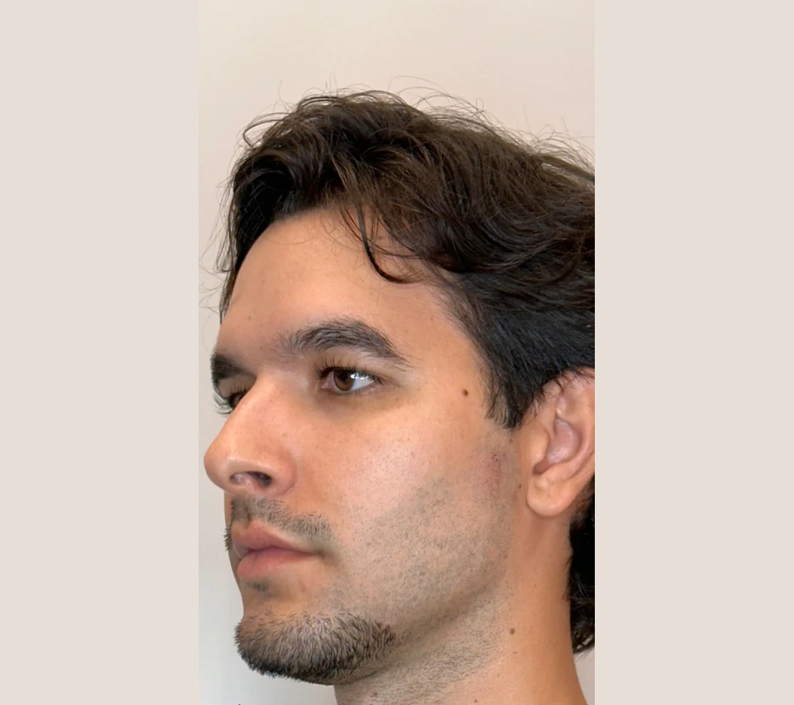
Harmonização FacialHarmonização Facial Masculina: Como Definir Mandíbula e Queixo sem Perder a Naturalidade
Guia completo sobre a estruturação mandibular e do mento masculino. Linhas firmes, ângulo reto e sofisticação no consultório em Curitiba.
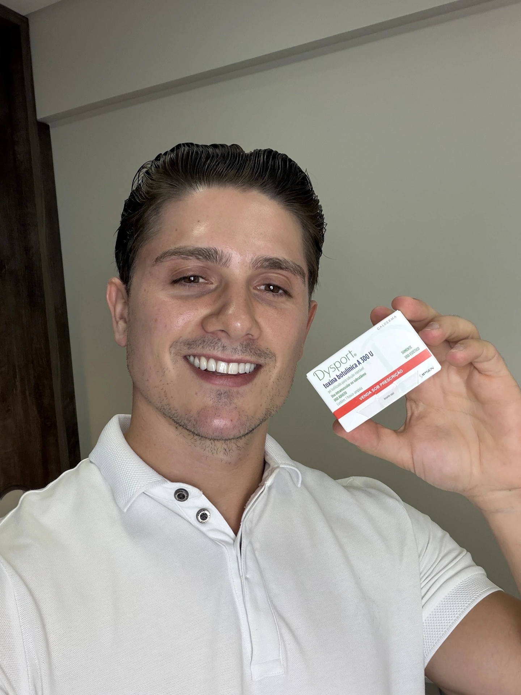
Toxina BotulínicaBotox Preventivo em Curitiba: Qual a Idade Certa para Começar?
Entenda o conceito de toxina botulínica preventiva, como evitar que rugas de expressão se tornem marcas profundas na pele e a frequência indicada.
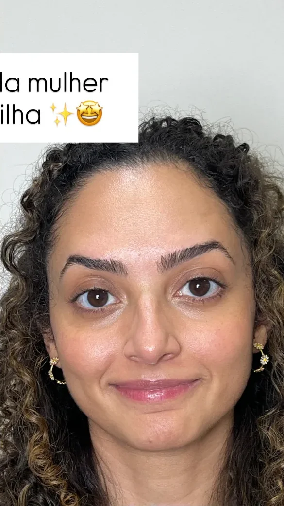
Toxina BotulínicaQuanto Tempo Dura o Botox na Testa e Olhos? Dicas para Prolongar o Efeito
Saiba a durabilidade média da toxina botulínica, quais fatores do metabolismo aceleram a absorção e hábitos para manter o resultado por mais tempo.
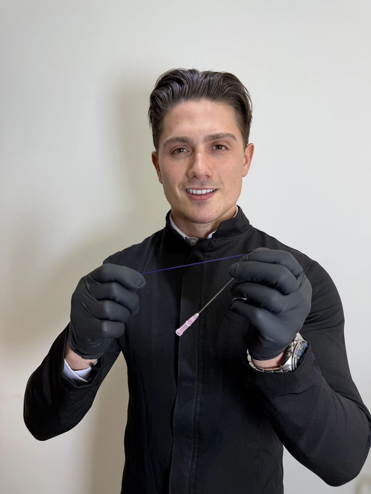
Fios de PDOFios de PDO em Curitiba: Como Funciona o Lifting Facial sem Cortes
Conheça a tecnologia dos fios de polidioxanona coreanos para sustentação imediata dos tecidos e estímulo biológico contínuo de colágeno.
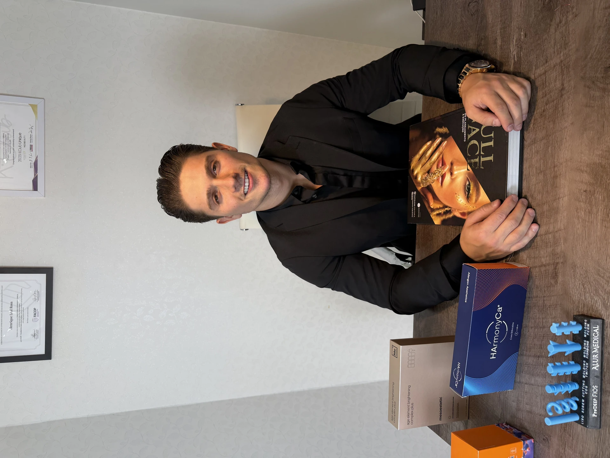
Fios de PDOFios de PDO ou Bioestimulador de Colágeno: Qual o Ideal para o Seu Rosto?
Entenda a diferença técnica entre reposicionamento mecânico de tecidos e redensificação celular da derme para combater a flacidez facial.
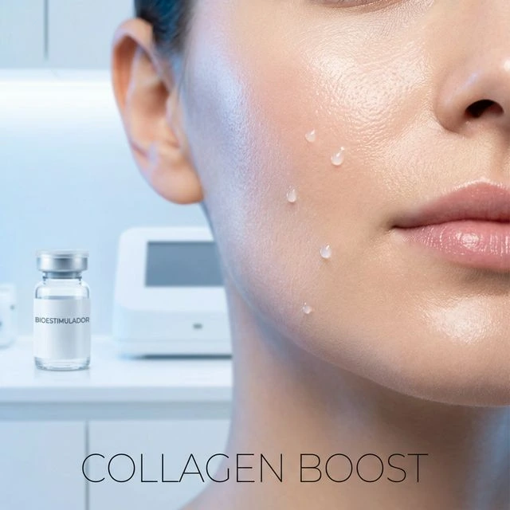
BioestimuladoresSculptra, Radiesse e Elleva: Diferenças entre os Melhores Bioestimuladores
Comparativo aprofundado entre ácido poli-L-lático (PLLA) e hidroxiapatita de cálcio (CaHA): durabilidade, volume e espessamento dérmico.
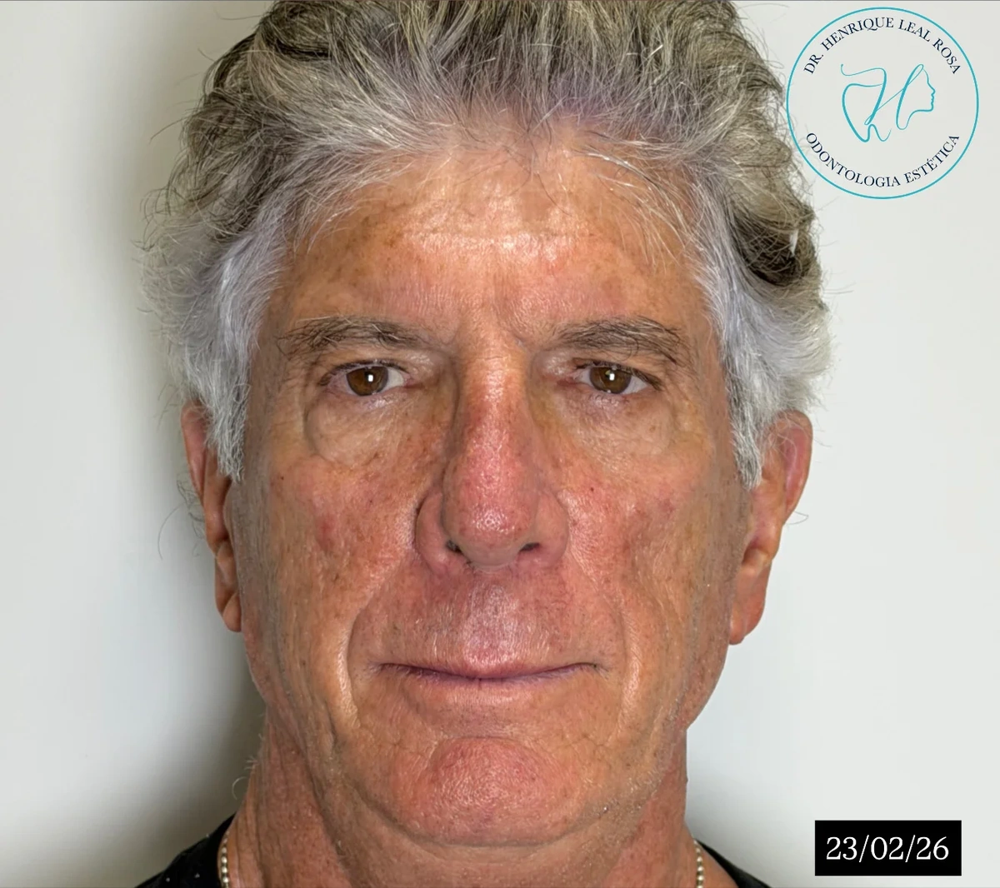
BioestimuladoresComo Tratar Flacidez no Rosto e Pescoço com Bioestimuladores em Curitiba
Estratégias clínicas para recuperar a sustentação do terço inferior e firmeza do pescoço sem procedimentos cirúrgicos agressivos.
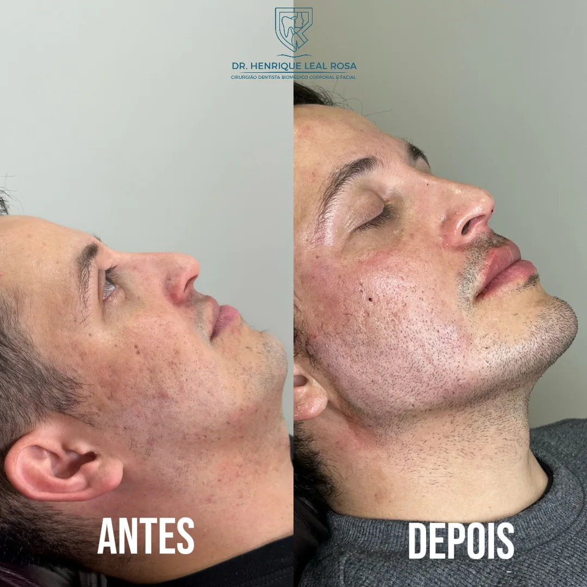
Harmonização GlúteaHarmonização Glútea em Curitiba: Bioestimuladores, Projeção e Firmeza
Tratamento avançado para depressão trocantérica, celulite e volumização glútea segura com bioestimuladores de colágeno e Plasma Gel.
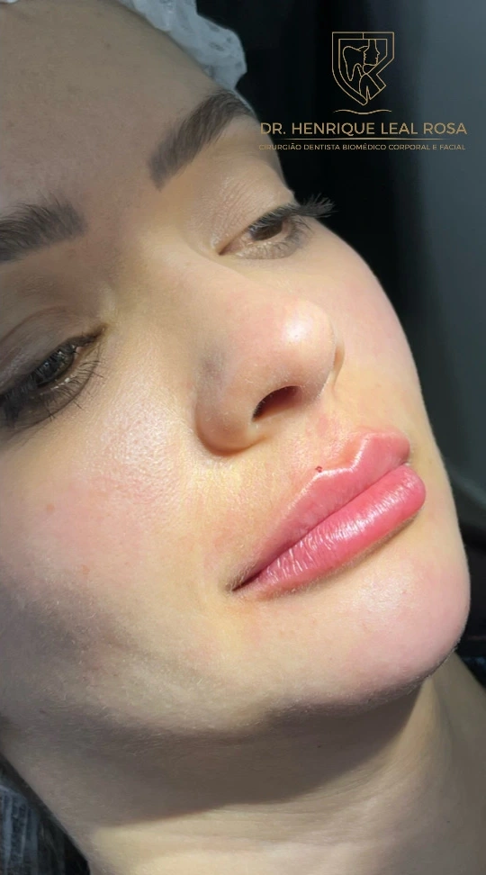
Preenchimento LabialPreenchimento Labial Natural Lips em Curitiba: Lábios Hidratados e sem Exageros
A técnica Natural Lips prioriza o contorno, desenho anatômico e hidratação profunda com ácido hialurônico de alta biocompatibilidade.
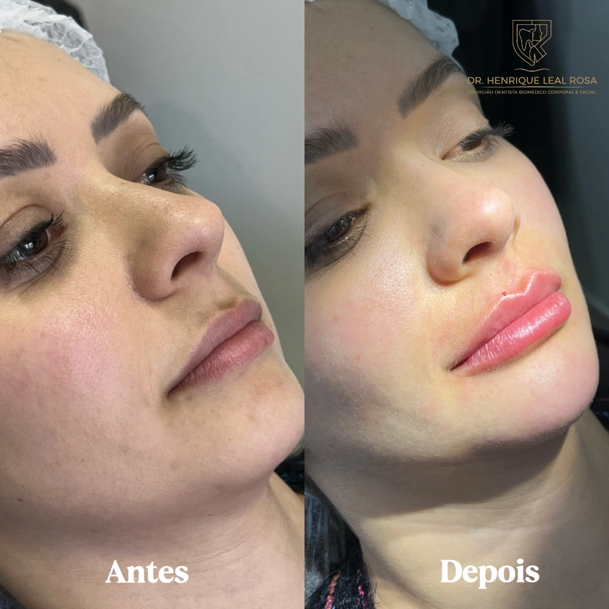
Preenchimento LabialCuidados Pós-Preenchimento Labial: Recuperação, Inchaço e Duração
Orientações pós-procedimento para minimizar o edema nas primeiras 48h, cuidados com compressas geladas e o que evitar nos primeiros dias.
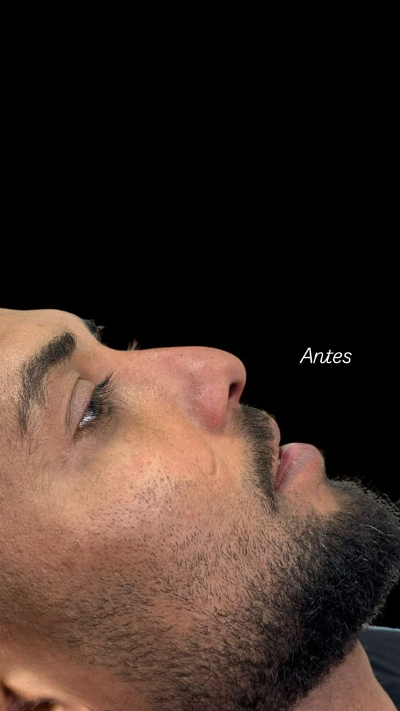
RinomodelaçãoRinomodelação em Curitiba: Como Empinar e Alinhar o Nariz sem Cirurgia
Procedimento seguro em consultório com anestesia local para disfarçar a giba óssea e elevar a ponta nasal em menos de 45 minutos.
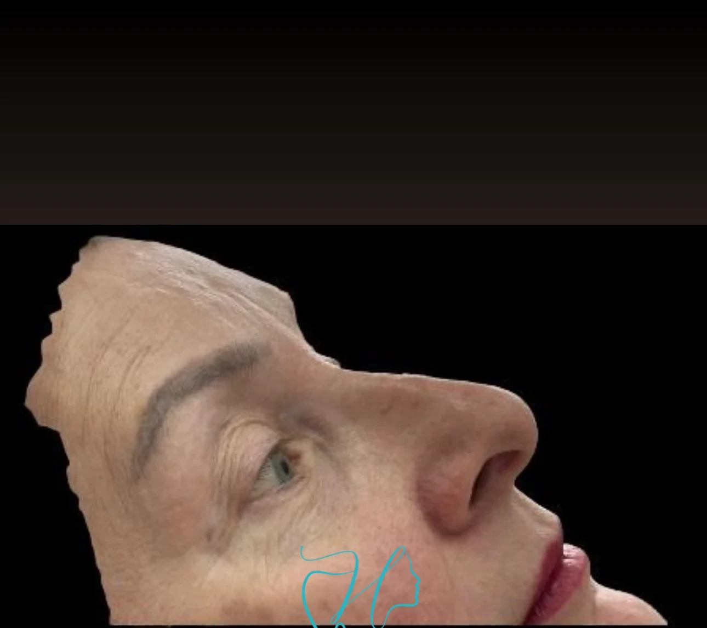
RinomodelaçãoRinomodelação Dói? Riscos, Tempo de Recuperação e Durabilidade
Entenda o protocolo anestésico intraoral e tópico, a ausência de dor durante a aplicação e os cuidados anatômicos para segurança absoluta.
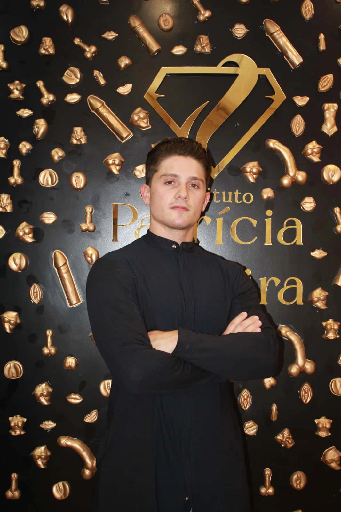
Estética ÍntimaPreenchimento Íntimo Feminino em Curitiba: Firmeza, Volume e Conforto
Como o ácido hialurônico corporal atua no rejuvenescimento dos grandes lábios, devolvendo turgor, hidratação e conforto íntimo.
 Estética Íntima
Estética Íntima
Rejuvenescimento Íntimo: Procedimentos Modernos para Saúde e Autoestima
Clareamento, bioestímulo de colágeno e hidratação da região íntima: rompendo tabus com ciência médica e discrição em Curitiba.
Protocolo Bioforce: O Tratamento Assinatura para Regeneração Facial Profunda
A sinergia entre regeneração dérmica celular, bioestimuladores de última geração e peptídeos bioativos para longevidade da pele.
Peptídeos Bioativos na Estética Avançada: Como Estimular a Juventude da Pele
A ciência molecular aplicada ao rejuvenescimento: como sequências de aminoácidos ativam fibroblastos para produção de colágeno nativo.
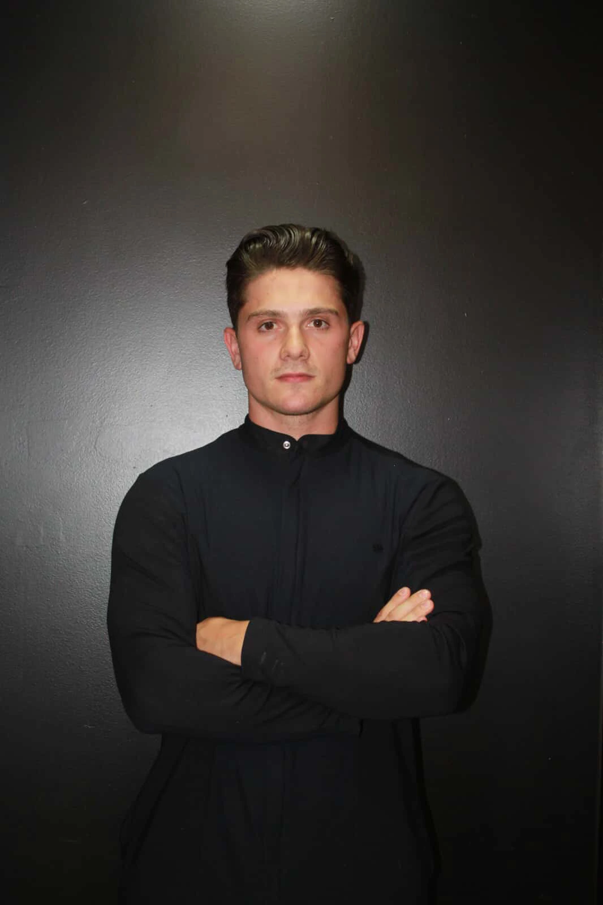
OzonioterapiaOzonioterapia em Curitiba: Benefícios do Ozônio Medicinal para Pele e Saúde
Ação moduladora inflamatória, melhora da microcirculação e aceleração da recuperação estética com ozônio medicinal em Curitiba.
Ozonioterapia no Pós-Procedimento: Aceleração da Cicatrização e Oxigenação
Como o ozônio atua reduzindo o tempo de recuperação, minimizando hematomas e promovendo a descontaminação tecidual ativa.
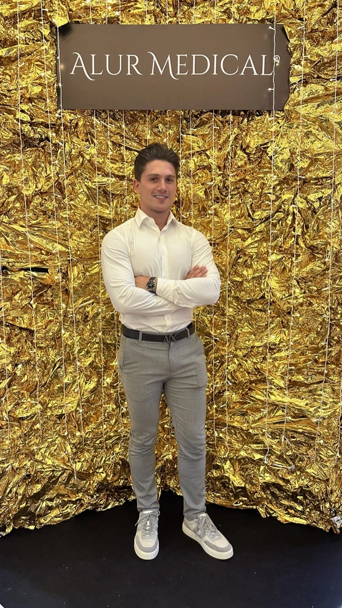
Terapia CapilarTerapia Capilar em Curitiba: Como Tratar Queda de Cabelo e Calvície com Tecnologia
Diagnóstico tricológico, fortalecimento do folículo piloso e associações clínicas para frear a calvície masculina e feminina.
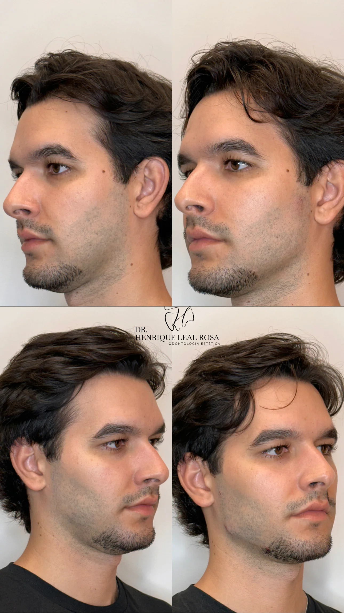
Terapia CapilarMicroinfusão e Fatores de Crescimento Capilar: Fortalecimento desde a Raiz
Entenda como a entrega direta de nutrientes e fatores biológicos no bulbo capilar desacelera o afinamento e estimula novos fios.
Deseja uma avaliação individualizada em Curitiba?
O Dr. Henrique Leal atende com horário exclusivo no Edifício Today's Office (Água Verde, Curitiba), com análise anatômica tridimensional personalizada.
Falar com Sabrina no WhatsApp ↗